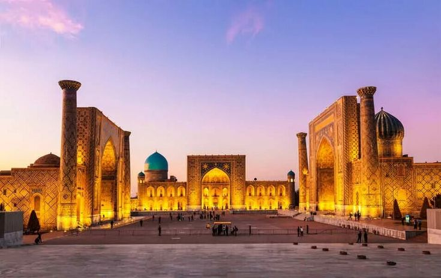
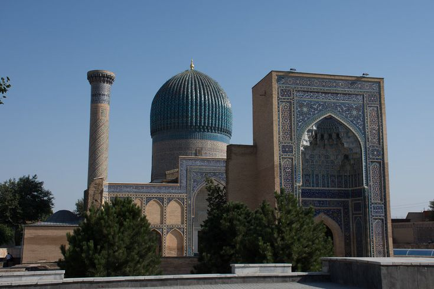
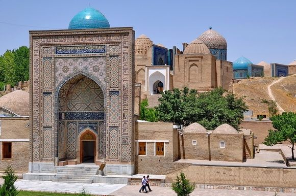
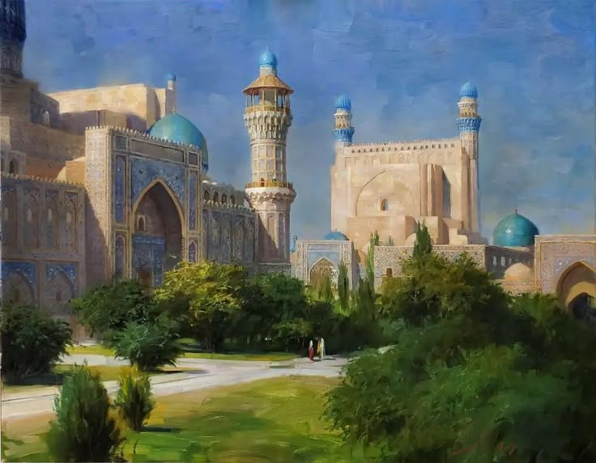

Mashhur tarixiy obidalar

Registon maydoni
SamarqandUlug'bek, Sherdor va Tillakori madrasalaridan iborat mashhur me'moriy majmua.

Go'ri Amir maqbarasi
SamarqandAmir Temur va uning avlodlari dafn etilgan, feruza gumbazli maqbara.

Shohizinda
SamarqandSirlangan koshinlari bilan mashhur maqbaralar majmuasi.

Poi Kalon majmuasi
BuxoroKalon minorasi, Kalon masjidi va Mir Arab madrasasi joylashgan markaziy maydon.

Ichan Qal'a
XivaDevor bilan o'ralgan qadimiy shahar, Kalta Minor va ko'plab saroylar bilan.

Oqsaroy
ShahrisabzAmir Temur qurdirgan saroyning ulkan darvoza qoldiqlari.